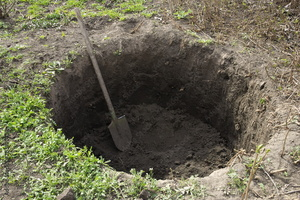

ϩⲓⲉⲓⲧ SA, ϩⲉⲓⲉⲓⲧ S, ϩⲓⲧ SA2B (once), ϩⲓⲓⲧ A2 nn m, pit (B mostly ϣⲓⲕ): Ps 7 15, Pro 22 14 SA, Eccl 10 8 (F ϣⲉ[ⲓ]) βόθρος, Is 24 17 SB, Mt 12 11 βόθυνος; P 44 53 ⲃⲗⲉⲑⲣⲟⲥ (? βόθρ.), ⲗⲁⲕⲕⲟⲥ · ⲡⲉϩ. حفرة، جبّ; PS 257 ⲛⲓϩ. ⲛⲕⲱϩⲧ, ShZ 595 ⲛϩ. ⲁⲩⲱ ⲛϣⲏⲉⲓ, Mor 53 42 ϩⲉⲛϩ. full of worms = TstAb 42 B ϣⲱϯ, BMis 152 ⲡϩⲓⲧ whither devil goeth, TillOster 21 A fall into ⲡϩ., ManiK 109 A2 cast into ⲡϩ., ib 111 ϣⲁⲙⲧ ⲛϩⲓⲓⲧ. Not to be confused with ϩⲁⲉⲓⲧ.
(noun male)
earth, construction
pit [βοθρος]

1: pit
complete
718a
See also:
| view | ϣⲱⲧⲉ SAL ϣⲱⲱⲧⲉ S ϣⲱϯ BF | (noun female) well, cistern, pit [φρεαρ, πηγη]3201 |
| view | ϣⲏⲓ SABF ϣⲏⲉⲓ, ϣⲁⲓ S ϣⲉⲓ F | (noun male) pit, cistern [λακκος, φρεαρ]1851 |